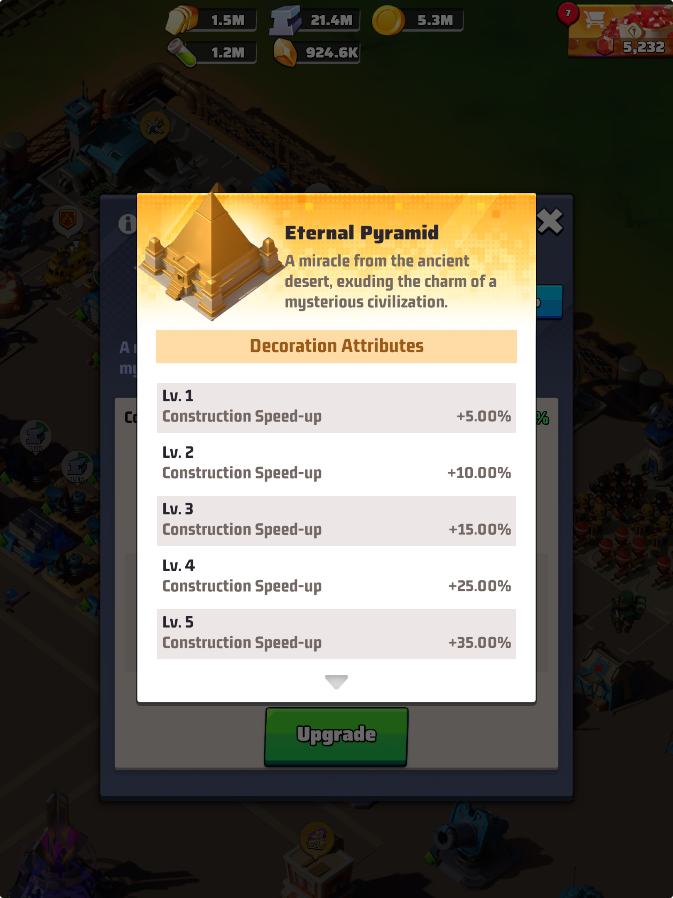

Last War: Survivor Tutorial by Golbez


This site will be free to read and ad-free as long as I can manage. But it takes a lot of time. If you want to throw a couple of bucks my way for a coffee or a hero shards pack I’d appreciate. Who knows, you might be saving a marriage.
Overview
Game Meta
Last War: Survival can be considered a game in two phases.
Initially, the gameplay takes the form of the scrolling zombie battle game that you see advertised on social media all the time. While this type of game play remains a part of the game to some extent, it’s mostly used as a way to get people sucked into playing the game while they get you hooked on the second phase (hoping you’ll stick around and spend money).
The second phase of game play is all about strategic base development. It’s like SIM City, Age of Empires, and other classic empire building game formats. What perhaps make this game a little different (and more fun in my opinion), is the intentional design to make joining an alliance essential. While there are certainly ways to enjoy the game playing on your own (more about that here), the Devs have clearly made the majority of the focus the events and tasks that are oriented around cooperation with your alliance and combat against other alliances and servers.
Alliance Duel: Weekly VS Battle Strategy
Alliance duel is one of the biggest parts of this game. Some would argue it’s the main point of the game. The idea is that 6 out of 7 days each will, alliance members complete in-game tasks that earn points for your alliance. Every day has a different theme. To maximize your performance, you not only have to do the correct tasks on the optimal day, but you have to be patient and plan on the other 6 days to ensure you aren’t wasting “future” points. It’s definitely a balance.
It’s important to know that Last War:Surival is a pay to win game. In other words, you can employ all of the strategy you can and play this game 24/7, and you’ll still not stand a chance again people who spend actual real-world money on the game (you can read more of my thoughts on spending real money here). That being said, you can grind your way to success and can often win by being smart instead of rich.
The first step to playing smart is to upgrade your Aliance Duel tech in the Tech Center.
The Tech Center
Every HQ has at least one Tech Center. You can purchase a second tech center for $9.99, which is not required, but it will drastically improve your ability to grow in the game.I intentionally don’t pressure people to spend money on this game. However, the second Tech Center makes my list of Top 5 Real Money Spends in the game.
The first image shows you what your tech center looks like. The second image shows you the research tech domains you can access (at varying levels).


When you click on the Alliance Duel domain (VS icon), you will see many options that give bonuses to the tasks we need to perform each week to earn VS points. I am highlighting the Radar tech in the top left corner. Mine happens to be fully completed. This means that on days when radar tasks give VS points, mine give 150% percent of the base points (100% base + 50% buff). In other words, each radar task I complete increases my/our VS Duel points by 25,000. So a member with a lower research level is doing the same thing I am but is getting a fraction of the points for it.


Once you’ve completed an upgrade, you will always get the higher points in each week’s Alliance Duel.You will see that there are buffs for nearly everything we do that earns Alliance Duel points. This is the first and most important step you can take to improving your contributions to the Alliance Duel.
Daily Schedule for Alliance Duel
Each day of Alliance Duel is worth a different point value. Day 1 is worth 1 point, Days 2 - 5 are worth 2 points, and Day 6 (Enemy Buster) is worth 4 points. There are basically two main approaches to winning the weekly duel.
The first approach minimizes the importance of Day 1 since it is only worth 1 point. The thinking is that if you win two of the four days that are worth 2 points and you win Day 6, which is worth 4 points, then the 1 point from Day is irrelevant.
Alternatively, you can treat a Day One victory as essential and then focus on wining three of the four days that are worth 2 points each. Although this method requires you two win more Days, it makes Day 6 (Enemy Buster) irrelevant, despite it being worth 4 points. This strategy is preferable for alliances that have been matched up with much more powerful enemies.
Day 1: Radar Training

Alliance VS Battles “Day 0” (Sunday)
They say an ounce of prevention is worth a pound of cure. Well, today I’m going to talk about how an ounce of preparation is worth a pound of VS points. That’s right. Earning points for Monday is something that actually starts on Sunday.
HOW DO I DO THAT!?
There are two main ways to prepare in advance for higher Day 1 point totals.
Gathering Resources
It may not be the largest point gainer, but the easiest way to earn points on Day 1 of versus is to gather resources from the resource tiles (gold mines, iron mines, and wheat fields). Actually, though, you get the points when you leave the resource tiles. This is a very important technical point because it means you can start earning Day 1 VS points before Day 1 begins. The main idea is that you make sure that when Day 1 points open for earning (around 10:05 Eastern on Sunday nights) you have squads already in the resource tiles. Once the earning window opens and you leave the tile (whether manually or automatically by gathering all the resources in the tile), you will get credit for all of the resources cashed in at that time. So let’s say for example that you began gathering gold at 3:00 p.m. on Sunday and left the tile at 10:06 p.m. on Sunday, you would get credit not only for the 6 minutes of collecting that began at server reset, but also for the 7 hours of gathering you did earlier in the day. The kicker to all of this is that you have to keep the squads in the tile until after reset. If you leave any time before 10:05, you will not receive any credit.
Saving and Researching Radar Tasks
It’s easy to get so caught up in just clicking on radar tasks that you don’t pay attention to the extra information on the screen. But there’s a lot of valuable info there that can help you maximize points and tasks and hopefully digs.
Let’s take a look at an important screen (It’s actually two screen shots combined into one). You can click the photo to enlarge, and if you’re on mobile, turn your phone sideways helps, too.

Depending on your Radar Level, you get a certain number of tasks every six hours. Tasks require two actions. The first action is completing. This requires 10 stamina per task and can include assisting an ally’s task, attacking a doom elite HQ (specially generated for the radar task), killing a doom walker, killing a doom elite, collecting from supercharged resource tiles (dramatically increased gathering speed), or hosting a dig site!
Once you complete the task, the icon on your screen will change to include a red dot. But you do not have to COLLECT the tasks as soon as you complete them! You can leave the task on the radar map and the red dot will hold its place. When you are ready to collect the task, simply tap the icon with the red dot. This two-step process allows you to complete the tasks before they expire while still holding onto them until the days when you receive VS rewards for completing radar tasks.
Keep in mind that each Radar Level has a cap to the number of tasks you can have “on hold” (completed but not collected). Once you’ve hit the max holding number associated with your level, you are likely better served collecting your 6-hour refresh number of tasks. This is because once you hit the max holding number, your refresh clock stops counting down. So if you sit on 40/40 tasks for example, once you complete them, only then will the clock start counting again. So even though you’ve been waiting a long time, you still have to wait 6 more hours for new ones.
Boosting Radar Task Points through Tech Center Research
What’s really importan in all of this is that you remember to keep playing the long game. Radar tasks are incredible sourcest of VS points throughout the week. But you can make them even more lucrative by maxing the radar tech in the VS Tech domain at the Tech Center. You can see more about that in my strategy guide.
Day 1 Strategy
Day 1 is a tricky day because your alliance really needs to make a decision about whether they want to try to win Day 1. This is because Day 1 is worth only 1 point in the weekly alliance duel contest. In many weeks, the 1 point difference isn’t worth worrying about. However, if you see on Sunday night that the alliance you match up with severely outmatches you in HQ power, which likely means you’ll get destroyed on Day 6: Enemy Buster, which is worth 4 points, you may want to give a Day 1 victory some serious thought.
If you know you likely can’t win Day 6, you can try instead to win Day 1 and then three of the other four days worth 2 points each. Basically, as long as your team gets 7 points, then it doesn’t matter who wins Day 6. So you can just have everyone put on a 24-hour shield and do some fun team building stuff like Marshall or Zombie Siege or some Seasonal activities that don’t break your shield.
You can still lose Day 1: Radar Training and Day 6: Enemy Buster and win the alliance duel for the week by winning all the other days. But many alliances don’t try as hard to win Day 1 and so it may be an easier path to victory. In any case, it’s something worth considering.
Day 1: Radar Training Explained
Day 1 (Radar Training) Rewards VS points for the following:
- Use 1 Stamina (syncs with Drone Boost Arms Race at 2:00 p.m. Eastern)
- Complete 1 Radar Task
- Use at Least 660 Hero EXP Points at a Time
- Drone Combat Data Point
- Use 1 Drone Part (not for opening the component chests)
- For Every Drone Skill Chip Point Gained (from opening drone chip chests)
- Gather 100 Food (Radar tasks don’t count)
- Gather 100 Iron (Radar tasks don’t count)
- Gather 60 Coins (Radar tasks don’t count)
Day 2: Base Expansion


Day 2: Base Expansion is a great day because you get
rewarded in Alliance Duel with VS points for stuff you wanted to do
anyway. As always, pay attention to the times during Arms Race when you
can be earning VS points and Arms Race points. This is
not the salsa bowl. Golbez encourages double dipping.
- Use 1 Minute Construction Speed-Up (VS points per speed-up minute)
- Increase Building Power by 1 Point (VS points times total power increase)
- Dispatch UR (legendary/gold) Truck 1 Time (VS points for each truck)
- Perform 1 Legendary (gold/UR) Secret Task (VS points for each dispatch)
- Buy Packs Containing Diamonds (30 points for each diamond)
- Recruit 1 Survivor (Points for each survivor recruitment ticket you use)
Recruit Survivors
There’s not a lot to this one. It’s important to know that you get points for each survivor recruitment ticket you use and not just for actually getting a new survivor. This distinction matters for a few reasons:
- Most of your tickets will result in survivor tokens and not actual survivors.
- After a while, you stop getting new survivors and just get duplicates
- You can get a new survivor from Doom Walker first blood kills as well as from upgrading your HQ, and these don’t count for VS.
Building Power and Construction Speedups
This seems pretty straight-forward. You upgrade a building. You use speed-ups. You get points. But there’s a little more nuance I can epxlain here.
- You can earn points for spending both Construction speedups and universal speedups. The type of speedup does not affect point values.
- You get credit for the building power increase when the constuction is completed and not when you start construction.
- When a building is finished being constructed or upgraded, it will
show up in your headquarters as a yellow/orange package with a red bow.
- The building will stay that way until you tap it and confirm it on the message that pops up.
- While the building is still wrapped up, it continues to provide benefits (e.g., gold from gold mines), but only at the level it was at when you started the upgrade. For example, if your HQ is gift-wrapped and will be level 27 when you open it, you won’t be able to unlock anything that requires HQ level 27 until you pull the ribbon, so to speak.
- Savvy commanders will upgrade buildings throughout the week and leave them wrapped up until the days that reward VS points for increasing building power. This works better for some buildings than others. For example, my level 22 gold mine is fine to sit there and produce gold at level 21 for another day or 2. However, I likely don’t want to leave my Level 27 HQ just sitting at a level 26 for three days.
- Gift-wrapped resource-producing buildings can still be harvested by 1-click gathering (HQ 20+) and by shaking the phone to collect (VIP 9 active or permanently unlocked at HQ24+).


Perform Legendary Secret Tasks
Legendary Secret Tasks are amazing for many reasons. Primarily, though, they are amazing because you get map pieces for dispatching the Legendary (gold/UR) tasks. When you collect all 7 map pieces, you can turn them in for a free chest, which can have incredible rewards.
Although you can launch legendary secret tasks every day, only a few Alliance Duel Days reward you with VS points. Day 2: Base Expansion is one of those days.
There are a few key ways to maximize VS points this way. First, remember that you only get VS points for launching LEGENDARY secret tasks.
You also can increase the amount of VS points you get from secret tasks by upgrading the Duel Expert tech at the Tech Center

At max level, you will double the amount of VS points you earn
for each Legendary Secret Task you launch.
The second way that you can maximize your VS points from legendary tasks is through refreshing blue and purple tasks so that they become legendary. Refreshing secret tasks “re-rolls” the rarity of the task. If you refresh enough times (which can be a lot of times), you are guaranteed to eventually get more legenedary tasks. Here are things to keep in mind when refreshing:
- Refreshing applies to ALL tasks that have not been deployed. So make sure you wait until all avaialable legendary tasks have a squad dispatched to them.
- Refreshing tasks is not free. In fact, you could call it expensive.
Here’s how you do it:
- Secret Orders: You can obtain Secret Orders a number of ways. You can purchase them in some of the stores, or you can get them from opening chests. I rarely purchase them any more as I find that I get enough throughout the day.
- Diamonds: You can refresh secret tasks for 100 diamonds. This can get expensive. But at the end of the the day for VS, especially when it’s close, many of us think, “Man! I wish I could just buy 1,000,000 more VS points for 1,000 diamonds!” Well, this is how you do that.
The third and cheapest way to maximize points from Legendary Secret tasks is by just exercising patience and restraint, which for most of us makes this the most difficult way. But if you find yourself staring at a bunch of purple and blue tasks with no Secret Orders left and you just can’t bring yourself to spend the last 100 diamonds you have got to your name, then just wait. There are no doubt many more chests and rewards that are going to come your way throughout the day. It’s almost guaranteed you’re going to get more diamonds or Secret Orders before reset. I see alliance members with lots of blue and purple tasks discpatched with 12 hours left in the day. That’s just leaving easy VS points on the table.
Dispatch UR Trucks

There are multiple ways to get to your trade trucks, and I’ve
tried to capture them all in this one screenshot. The third one takes
you to the Truck Plunder screen, but you can still get to your own
trucks by clicking the eponymous “Your Truck” tab.
There are a few factors that can affect the number of trucks you can have out at once, but it’s essentially tied to the number of squads/garages you have unlocked. In any case, the max number out at once doesn’t directly affect your ability to earn VS points, so I won’t get into that here.
As with Performing Legendary Secret Tasks, you only get credit for dispatching UR (gold/legendary) trade trucks. The amount of points you receive also depends on the various upgrades you have made in the tech center.
Unlike Secret Tasks, though, you can make extensive upgrades to your Trade Trucks at the Tech Center. I won’t go into all of that here, but this is where you will go to make various improvements to your truck driving experience.


Increasing the number of trucks per day won’t help you much if
you aren’t making sure they are all UR (gold/legendary) quality. You can
make sure they are all UR level by refreshing the rarity. As with all
things in this game, it’s not free. You will need either Trade Contracts
or Diamonds. Each refresh attempt is 1 Trade Contract or 100 Diamonds.
The good news is that you actually get one free refresh per
truck slot. So before you go spending diamonds and contracts.
See if you can get a UR truck on the open lane (+ button with no
truck).
The advice here is the same as with Legendary secret tasks. You get points when the trucks are deployed, not when they return. So you have a 24-hour window to wait and get enough contracts or diamonds to make sure they are all UR status. And just like with Legendary Secret Tasks you should be thinking about this in the sense that when you run out of contracts, you are “purchasing” VS points with diamonds. I think that 1,000 diamonds or more is worth it for 200,000 VS points.
Day 3: Age of Science

Day 3 Explained
Day 3 (Age of Science) Rewards VS points for the following:
- Tech Center Research
- Completing Research
- Using Research Speedups
- Using Valor Badges
- Increasing Tech Power (which comes from completing research)
- Completing Radar Tasks
- Opening Drone Compenent Chests
Prioritizing
Upgrades with Valor Badges
The way to earn the most VS points on Day 3 is by upgrading tech that requires the use of valor badges, which can be viewed in your inventory’s “Special” tab and look like this:

There are multiple ways to acquire valor badges, but that doesn’t make them easy to get. You likely won’t be able to upgrade ever valor-badge tech you want each time it’s the Age of Science. You simply will run out of those before you run out of speedups and gold.
The following tech domains require valor badges for upgrades:
Alliance Duel
Special Forces
Intercity Truck
Siege to Seize
Defense Fortifications
Radar Tasks
This can be a huge and easy source of points. But this is mostly true when you have maxed out the radar boost in the Alliance Duel Tech domain in the research center. I am extremely reluctant to tell people how to spend their money, but I do not advise paying the $4.99 for a radar replenish. It can purchase 1,000,000 VS points when you are fully upgraded, but this is typically nowhere near enough to flip the outcome of the day. What’s more, you have basically nothing to show for your money. The benefit is almost immediately gone.
Drone Component Chests
The hardest part about getting points opening drone component chests is just waiting 6 days to spend them each week as Day 3 is the only time you get VS points for them. The very high level chests can boost your score very quickly, but those are extremely difficult to obtain. As I said before, the best thing you can do is keep staring at the image below six days and not touching them.

Maximizing with the Secretary of Science Buff
Most of the time (I won’t go into the exceptions here), you can apply at the capital for the Secretary of Science (and other) position. The server’s First Lady appoints people to this position once they have applied. Generally, when it is your turn, you will have the Secretay of Science position for 5 minutes only. During this time, you will get a 50% reduction in research time added to your existing buffs. This means it doesn’t cut the time you see in half. It’s more complicated than that. Nevertheless, it can take DAYS (yes, days!) off of your time for research at the higher levels.
To apply for Secretary of Science Position, you can click the “Capital” crown icon that is sometimes visible on the right hand side of your screen. When that icon is not there, you need to go to your profile, select the server (421), and then select the “Officials” (building) icon.


Make sure that you plan ahead. The wait list is usually very long. Each person in line is a minimum 5 minute wait. Count how many are ahead of you, multiply by 5, and then set an alarm for close to the time when you should be up. Keep in mind that some First Lady’s skip over folks in the quere who are not online. So it’s possible that you will get skipped if you sign off. Getting this buff can be a serious committment on Day 3 of VS, but it’s definitely worth it.
Once the buff is active, choose small research tasks (in terms of time). Start the task and then burn through all of the research speedups I know you’ve been saving. Complete as many research levels as possible, focusing on those that use Valor Badges. Watch your point total skyrocket while you get super strong.
Pro Tip: The Secretary of Science position also gives you a 25% boost to building construction time reduction, so you can double dip. Similarly, the Secretary of Development Position gives you a 25% research boost in addition to the 50% construction boost. So if you don’t feel like waiting in line for Secretary of Science, you can usually get the Development position faster and sacrifice some times.
HQ Advancement
If you’ve made it to HQ 15 or so, then you no doubt have discovered the two main barriers to base expansion:
- Time
- Resources
Each tab below tells you a bit about how to deal with each.
Time
When you first start playing the game, the time required for constructing and upgrading the various buildings in your headquarters is typically measured in minutes and hours. Before too long, you start seeing that building upgrades take more than a day. You get used to that just in time for your required upgrades that start requiring weeks. When you finish wiping away your tears, you then notice that upgrades once you get to HQ 25 or 26 can take a month or more. Headquarters in particular can take 2 or more months to upgrade once you get to level 27 and beyond. Now, the simplest and cheapest way to deal with this is to just… wait it out. But if you’ve made it to level 24 or so, then you’ve clearly shown that you like this game too much to just wait like some newb. You NEED those upgrades.
So if you don’t want to just wait it out, here are the time hacks you need to know about.
Extra Construction Queues
The most effective, pound-for-pound way to build and upgrade faster is to have multiple construction queues available. They say “Many hands make light work.” This is the idea. It’s not hard to understand either. Let’s say you have two upgrades that each take one week. With the default number (1) of construction queues, this will take you two weeks. But with a second queue, you can do both at the same time, cutting your time in half. You can have this incredible boost for $1.99. Now, here in LFG we don’t push people to spend real money on this game. Nevertheless, some people choose to do so, and the second construction queue tops my list of best in-game purchases. You can also purchase a third and fourth construction queue for $9.99 and $19.99, respectively. I personally think the third queue is worth it. However, these extra queues have diminishing returns because as you advance in HQ level and building power, building upgrades become exceedingly more expensive in terms of resources. There will be many times when you have a third builder that is sitting idle because you simply cannot afford to build anything else in your HQ because everything costs 500 million of each resources (I address resources in the other tab in this section). The idea of a fourth construction queue may seem worth it early on, but once you hit HQ 26 or so, you will probably just be unable to use it often.
Speed-Buffs
There are several ways to increase the construction speed of your base at the outset (meaning you have to to this before you start the build).
Apply for the Secretary of Development Buff- I won’t explain the whole idea behind offices here, but you get a 20% buff to your construction speed while you are the Secretary of Development. Whenever you have a building that takes more than a day or so, you should endure even the longest of lines for this buff.
If you’re in a hurry, and the line for Secretary of Development is long, and you just have some smaller upgrades to make, you can also try to get the Secretary of Science buff, which gives a 10% increase to your construction speed. It’s not a great plan for upgrades that take a long timeUpgrade Your Alliance Center- The alliance center doesn’t get a lot of attention, but the higher the level, the higher number of allies you can have help you build. And when you add in the Lawyers (survivors) to the mix, the time enhancements get increased even more.
Get The Engineer Boost from an Alliance Member- Season 1 brought some big changes to the meta. One was the introduction of Professions.
Buy the Pyramid Decoration Very Early On- Most people reading this won’t be able to take advantage of this. However, during the first few days you play the game, you have an opportunity to purchase the pyramid. Most people don’t buy it because they are still very new to the game during the only window it’s available for purchase. The good news is that once you buy it, you can continue to upgrade it with Universal Decor Components like you do any other UR decoration.

Purchase Speedups
There are four task-specific speedups as well as universal speedups. You can use construction speedups and universal speedups for constructing and upgrading buildings. These can be obtained through chests and other in-game reward mechanisms.They can also be purhcased through multiple stores. Different stores offer different options. Most weeks you will find yourself trying to balance where you buy your speedups as you may find you need to buy something with diamonds that isn’t available in the alliance store (or vice versa).
Ask for Alliance Tech Upgrades
This isn’t something you can do on your own, but every alliance has a list of Alliance Tech buffs that can be upgraded by members spending coins and diamonds. Several of these techs can help you build faster. Talk to the leaders of your alliance about prioritizing those buffs first instead of trying to maximize small but relatively inconsequential buffs.
Rotating Events
Last War features a number of events that rotate throughout the month. I’ll try to get them all here eventually.
Zombie Invasion

I like to refer to Zombie Invasion as “The Most Wonderful Time of the Year.” What’s not to love about Zombie Invasion? Little leprechaumbies that crap out big fat Zombie Bosses when you kill them? Sweet (and I mean sweet) rewards. In fact, that’s where I’ll start.
Zombie Invasion Mechanics
This event is straightforward. The server map populates with delicious little level 10 zombies holding pots of gold (henceforward known as leprechaumbies). The leprechaumbies are easy to kill and they give great rewards.
Occasionally, defeating a leprechaumbie causes them to poop at a zombie boss. These are like doom elites (standard, not Season 1) in that you must rally attack them regardless of levels. The levels increase at multiples of 5, so don’t go looking for a level 3 one. These bosses are unlike regular doom elites in that, at higher levels, they can be really annoying to kill, making them tough little fitches (get it? leprechaumbie and fitch?). And the difference in rewards between something like a level 45 and a level 65 is in no way worth the loss of troops.
Another cool way that these zombie bosses differ from regualar doom elites is that the person who killed the leprechaumbie that pooped out the fitch gets a “finders fee” when someone kills that fitch. So you get rewards even if you don’t kill it. Of course, the catch is that they are on a timer, so you have to kill them in a set amount of time.
And if this all isn’t enough, let me put a cherry on top of this Sunday. If you kill the fitch that your spawned you basically get double rewards.
What I like to do, since the leprechaumbies are so easy to kill, is to go tile surf (see other tab) and farm with my lower squad so that my top squad is free to launch the rally on any fitches I spawn.

Zombie Invasion Store

In theory the most important part of Zombie Invasion is how to participate. But you’d be amazed how many people participate in Zombie Invasion for months and have no idea there is a ZOMBIE INVASION STORE!!! And it’s actually really good. Here’s what you need to know.
Killing Leprechaumbies (level 10 normies) and Fitches (the spawning zombie bosses) gives you trade store tickets. These can be spent in the Zombie Invasion Trade Store as long as the event is currently live. But don’t worry, if you don’t manage to spend all of your tickets, they’ll stay in your inventory until the next time the event is back in rotation.
I don’t have tons of advice about prioritizing purchases except to say that my first choice here is always the stamina. Each Leprezaumbie uses 10 stamina and the zombie bosses require 20. You can run out of stamina real fast farming these lovelies. So stock up here first.
From there, I typically prioritize hero recruitment tickets. Beyond that, it really just depends on your needs at the time.
I typically don’t buy valor points or drone parts here because I don’t think they are better buys than the other stuff in the store and I never have enough tickets to buy everything.
Tile Surfing for Faster Zombie Farming
The game mechanics set different marching speeds for your squads based on the activity they are doing. In general, it takes a LOT longer to get somewhere when you are attacking. It takes about hald the time to travel to an adjacent resource tile, though, because the march speed for gathering is so much faster. In other words, if there is a zombie right next to a gold mine on the map, and you dispatch two squads at the same, assuming they have equal base march speeds, the squad going to the gold mine will get to it’s destination almost twice as fast as the one that you dispatched to the zombie.
So the smart play if you want to attack the zombie is to dispatch your squad to the gold mine, then attack the zombie from the gold mine once you are there or right before you get to your location.
Now, let’s take it to the next level for maximum efficiency. There are so many gold-pot-toting zombies on the map that you can spend lots of time hunting them. The real pro move for this is what I call “tile surfing”. The idea is that you find an area with lots of the little zombies, target a nearby resource tile, transition to the zombie, then rinse and repeat.
Here’s a video I made to demonstrate.
If you’ll forgive the self-promotion here, please like and subscribe while you’re there. There’s not much there right now, but I’ll be posting more content in the future. And you know, blah blah blah algorithms blah blah blah.
Decorations
Over time, you can make large gains in march power through acquiring and upgrading decorations. That being said, not all decorations are created equally. In fact, not even all UR (gold) decorations are created equally.
All decorations (except for the pyramid and the golden mobile squad) provide combat boosts and their effects can be found in the Decoration Gallery in your HQ.
Let’s start by reviewing the different levels/rarities of decorations in the game.
- Ornaments: These decorations are just cosmetic. They take up space and add aesthetic appeal (if that’s your thing) to your HQ.
- SR Decorations: These are blue in color (in the menus). You can get them regularly and for free each day through various tasks and rewards. They add small combat buffs. DO NOT use universal pieces to upgrade these.
- SSR Decorations: These decorations are purple in the menus. You can get them with varying degrees of regularity The bonuses they provide are better than SR decorations, but they are more difficult to obtain. DO NOT use universal pieces to upgrade these.
- UR Decorations: These decorations are gold (in the menus). These are rare, but not all UR decorations are equally rare. The bonuses are also better than those from SR (blue) and SSR (purple) decorations, but again, not all UR bonuses are created equally.
Super Rare (SR) Decorations
Super Rare decorations are poorly named as they are actually very quite common. In fact, you get a UR chest every day when you complete the full daily task list. Honestly, SR decorations are almost not worth the space they take up in your base. Almost. There are only four of them, so it’s not a big deal. Even at level 7, they give negligible boosts to HP (Bronze Tank and Pacifism), Hero Attack (Bronze Missile Truck), and Hero Defense (Bronze Aircraft).
Essentially you can ignore these decorations until the game notifies you that you have collected enough copies of a decoration to upgrade it.
Prioritizing and Upgrading Decorations
Each decoration has 6 levels. Nearly all decorations offer the same type of level 1 and 2 buffs: Hero HP, Attack Power, Defense. Although the bonuses increase in a fairly linear fashion for all rarities, the more rare UR decorations become FAR more valuable at level 3. This isn’t because the percentage increase jumps but because the extra bonuses are far more valuable than HP, Attack Power, and Defense. These bonuses include Skill Damage increases, Critical Hit damage increases, increased damage to monsters, and increases to march size. I’ll refer to these simply as special bonuses.
Hit points bonuses aren’t very important in the grand scheme of things. When you consider that a 5-star level 150 Kimberly has over 2 million HP, why do we care about even 50,000 more?
Attack power and Defense buffs are better enough than HP to prioritize those bonuses in a decoration, but they aren’t really what you want to focus on. For example, a level one decoration may boost all hero attack power by 300. But you can get similar increases, albeit on an individual hero basis, by simply upgrading gear. Nevertheless, Attack Power and Defense are still generally preferable to Hit Point bonuses.
What this all means is that you ideally want to target the more rare UR decorations that give bonuses to attack or defense in the first two levels and then add one of the special bonuses above once you get to level 3. This is because the special bonuses are those that are very hard to come by any other way in the game. For example, apart from the rare UR decorations, bonuses to skill damage really only come from the HQ effect cosmetics that have to be acquired from spending money on special events. Hit points, attack power, and defense, on the other hand, can be increased through many other avenues.
It’s worth stating the obvious: If you have enough named (non-universal) decoration pieces to upgrade a decoration you should always go ahead and upgrade the decoration.
Paying to Win
Like it not, this game is pay to win. It’s not pay to play, but if you want to achieve max bonuses, unlock the best gear, grab those amazing cosmetics, and defeat your opponents, the amount you spend matters. In our alliance (#421; lfG), I make a big deal not to pressure people to spend real money. In fact, our leadership team has been instructed not even to suggest people spend money on this game. But I have invested plenty of money in this game, and there are lots of people who have invested thousands of REAL US DOLLARS in this game. It’s a serious business.
Many people think the idea that spending any money at all on a free game is absurd. People are allowed to feel however they want. But let me offer some of my perspective on this. I used to run a lot. I got to where I got sad if I wasn’t running 4-8 miles a day. One thing that’s awesome about running is that you can do it for free. However, you can also spend hundreds of dollars on high-performance shoes. You can add hundreds more in fancy attire and supplements. You can even pay money to run at the same time as other people in a thing called a race, which is wild, because you can basically challenge anyone to a foot race for the price of zero dollars.
I have a buddy who is big into golfing. He tells me that depending on the course, a person could expect to pay a median greens fee in the range of $50 - $100 for 18 holes. Now let’s say my buddy does that this Friday. He drops $100 on 18 holes and 2 rounds of beers and has 4 hours of fun on a Friday afternoon. When that’s over, he’s got nothing to show for it. But who cares? He works hard for his money and had a good time when he spent it.
I see the game the same way. If I play this game for 4 hours on Friday night and have a blast pushing VS, doing Desert Storm, rallying Marshall and lighting up HQs in Enemy Buster, and chatting with all my friends in the alliance who are doing the same, who cares if I spent $50 on game packs? I had a blast, and the $50 helped me win some of those close battles. I have just as much to show for it as my buddy who played a round of golf.
My final take is this: I work for a living. I make money for my work. I have played this game for multiple hours probably every day since I downloaded it. That’s hundreds of hours of enjoyment. Some people spend $100 a month just on tipping the barista who pours their iced coffee each morning. The absurdity of tipping as a system of payment is a conversation for another blog. But I think the Devs of this game do a lot more work to ensure my enjoyment than the myriad folks nowadays who flip the iPad and tell me there’s a question I need to answer. And I think the devs deserve to make money for that work. So I’m not going to feel bad buying game packs to support them. Just like with my server at the restaurant, it’s not their fault they make more money if I spend more and tip better.
In sum, you work hard for your money and if you can afford to spend some on this game, then that’s your business. If you don’t want to spend any money, that’s cool, too. This is a free game. There are many people in this game who have really powerful accounts and have spent $0 or a couple of bucks at most. You just have to grind it out and be smart. That’s what this strategy guide is for. If you want to spend money, though, there are also smart ways to do it. I’m going to give you my top 5 in-game spends here as well as some pay-to-win grabs that I think you might want to avoid.
Top 5 In-Game purchases
- Construction Queue 2 for $1.99

Think of this as purchasing time. You don’t have to wait nearly as long in real life to enjoy new parts of the game if you build multiple buildings at once. To put it another way, this is like paying $2 for a permanent 50% construction buff (you’re doing twice the building now in the same amount of time as a single). There is a way to “rent” the second building queue for diamonds when you need it. That’s a great option for free-to-play people, but I think $2 here is money very well spent. And think of it like this. Since you no longer have to rent the builder with diamonds, you’re essentially purchasing a boat load of future diamonds with that $2. I mean who doesn’t love a good BOGO!?
- Second Tech Center for $9.99

When you get into later game (like HQ27 and up), the emphasis shifts drastically to upgrading your tech. There are SOOOOOO many tech upgrades and they start getting into taking multiple weeks to finish. You really can’t compete at the highest levels if you don’t have a lot of upgrades. And you can technically upgrade everything in the game with one tech center, but man does it take forever. A second tech center can also add some extra oomph to VS and Arms Race events that reward tech power increases.
- Kimberly (UR Tank Hero) for $.99

This list used to have 1a as the second construction queue and 1b as Kim. She’s fallen a little bit recently because the game no longer forces you to upgrade the tank center in order to get to higher HQ levels. Nevertheless, Kim remains pound-for-pound the best hero purchase in the game. There are other UR heroes that are comparable (Stetman in particular), but you typically have to spend $5 on the “Take All” daily sale to unlock him (See number 5 for more info about Daily Must Buys).
- Construction Queue 3 for $9.99

This is nowhere near the steal that the second construction queue is, but it’s still a tremendous value. Hero power is great, but I think the best purchases in the game are the ones that save you time. Even with multiple stacked construction buffs and the appointment to Secretary of Development, high level HQ upgrades can take a month or more. And the tech center, tank (or missile or aircraft) centers, barracks, hospitals and the wall aren’t far behind. Only having one or even two constuction queues will get you bottlenecked for growth in the long run.
- “Take All” Daily Must Buy for $4.99

The Daily Must Buy “Take All” deal is great. Every day you get a chance to get 10 hero-specific UR shards and some other assorted rewards for $4.99. This is how I have unlocked multiple UR heroes. You can unlock some by random chance with legendary recruitment tickets, but these offers are the fastest and most efficient way to do so. I never buy the individual packages for a legend, btw. I always buy the “Take All” deal. And you can always click the arrows icon to change which hero you’re buying.
- Honorable Mention 1: Survivor Taylor for $4.99
This one might surprise you. But when you pay $4.99 to unlock Taylor, she immediately gets to work. You’ll deploy her to your headquarters and every day from then on out, you’ll get 5 adventurer Taylor chests (1 with each of your first 5 daily radar scans). Early on, these can have a UR Decoration to put in your base, though the odds of landing one seem to frop dramatically after the first level or two. But every day I get my five free chests.

- Honorable Mention 1: Golbez’s Stategy Guide
Ok… so this one is clearly shameless self promotion. I’m happy to offer this as a free and ad-free resource, especially to my own alliance.
That being said, I spend a lot of time getting this in shape to help people out. I’ve spent more money on this game than I’ll ever tell my wife about, so I know what good and bad buys look like in this game. I promise you, this blog is worth at least a $5 donation, even if I am being completely biassed and self-serving.
So in case you just needed a second chance to consider, I’d really appreciate the support.
Purchases I Advise Against
Look, you’re free to spend your money how you like. It’s not my business to tell what to buy and what not to buy. Instead, let’s just say these are purchases in the game that I personally feel have very little value.
- Radar Replenish for $4.99
This little bastard gets people all the time. It’s super tempting because for the the low price of 5 dollars you can basically buy 1 Million vs points (assuming you’ve maxed out the tech center boost for radar scans) with the possibility of getting a dig.
In general, though, I don’t like purchases like these that do not have staying power. In other words, unlike a hero purchase that I get to keep as long as I play the game, a radar replenish has no value 30 seconds after you finish the scans. You may have gotten a few treasure chests and some VS points, but you can’t really point to something like a new hero of second building queue that you have to show for your money. As such, it’s my number one buy to avoid.
- Diamond Packs for multiple amounts
Say what you want about the greedy devs trying to stick their hands in your Apple wallet, these folks hand out premium in-game currency all the time. Most pay-to-win games are super stingy with premium currency, but you can easily rack up thousands of diamonds a day without buying a single one. And every time the devs think an update may have hurt someone’s feelings that send you 100 diamonds in your System Mail inbox. With so many chances to get these resources for free, I’m a hard pass on recommending folks spend any real money on them.
- Pure Random Draws
I don’t have a great example in my head, but some of the items you can purchase work off a random roll of some digital dice. I don’t like it. If you want to gamble, go somehwere they serve free drinks on the floor. I’ve only bought game packs in one special events mode and that was sportsopoly and only because it was an unusually cheap way to get legendary gear blueprints. And there were counters and mechanics that rewarded you for each purchase despite the presence of a random game mechanic. But if I see a purchase option and’s totally independent draws, I steer clear.